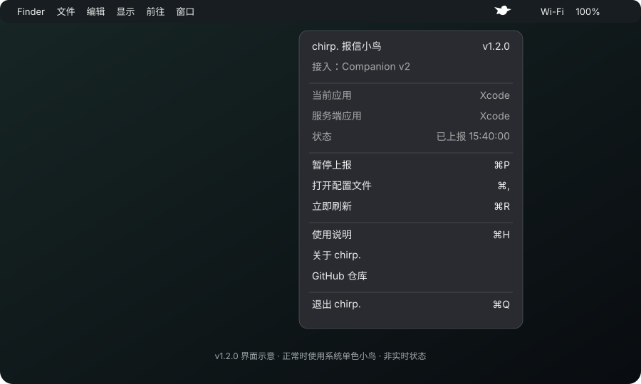

把你正在使用的软件实时报到博客。纯 AppKit，零依赖。新版 Companion 与旧云函数都能接，菜单栏一眼确认上报状态。
curl -fsSL https://raw.githubusercontent.com/poboll/chirp/main/scripts/install.sh | bash
关注一件事：把当前应用告诉博客。保留清楚的状态，也保留暂停的选择。
纯 AppKit + Swift Package，零第三方依赖；LSUIElement 无 Dock 图标，只住菜单栏。
应用切换后防抖 3 秒；Companion 每 30 秒续期，旧云函数默认每 240 秒续期。
正常时保持系统单色；失败后 5–60 秒退避重试，暂停取消重试。橙色表示等待或暂停，红色表示失败。睡眠唤醒补报，配置错误保留原文件。
优先使用图标 CDN。旧模式可回落本机图标；Companion 仅发送 HTTPS 图标（见 说明）。
按配置中的 endpoint 选择协议。升级后端会带来新接口，设备配对与主题开关仍需配置。
macOS 13+（Apple Silicon）。安装后按博客版本配置：新版使用 Companion 设备配对，旧版使用 ps/update 云函数。
curl · release · launchagent
密钥只落本机 · 600 权限 · 不经 GitHub
不传参数也行：装好后点菜单栏小鸟 → 打开配置文件（⌘,）手动填。
swift package · 两行
应用图标由主题映射和 CDN 提供。旧模式还支持本机 data URI，Companion 未命中 CDN 时仅上报应用名。
自建主题可复用 Innei/reporter-assets 的名称映射（Xcode、VS Code 等常见开发软件，含中文应用名）—— 该仓库未声明 License，二次分发前请先确认。
poboll/app-icons 的 manifest（约 240 个常见 macOS 应用）映射成 jsdelivr 图标直链上报，manifest 每日自动刷新。
仅旧云函数支持本机图标内嵌上报。Companion 不接受 data URI；图标库未命中时，主题可使用自己的映射。
mx-core 内置接口 + Yohaku / Live Desk。旧版 chirp 1.1.0 不能直接使用新协议，请先更新。
公开读取，无需密钥
curl -fsS https://your-api.example.com/api/v3/companion/capabilities
返回的 presenceSchemaVersions 应包含 2。后端升级不会自动把旧 key 转换为设备令牌。
只授权前台应用状态
在后台 Companion 设备管理生成配对码，仅勾选 companion:presence:write。在源码目录执行助手并交互输入配对码：
python3 scripts/pair-companion.py --api-base https://your-api.example.com/api/v3
需要 Python 3。助手会备份旧配置，将设备令牌写入本机配置（0600），不会输出令牌。
客户端 + 主题分别确认
点小鸟 → ⌘R 重读配置。菜单显示已上报、服务端应用读回一致后，在主题启用 module.liveDesk.enable，打开博客确认。只收到上报确认还不能证明网页已显示。
下面是旧版云函数运行环境的示例；不是 Companion 的配置。路径 ps/update，Method POST，将 YOUR_SECRET_KEY 换为强随机密钥。新版 core 若返回 500，需要按当前函数运行环境调整，或随新主题迁移至 Companion。
旧客户端配置 endpoint 为完整函数地址，key 与函数密钥相同；旧活动组件也须读取此函数。读取使用空对象 POST。
Companion 的设备令牌与旧云函数密钥相互独立。不会向未知接口试发凭据。
| 协议 | 调用 | 鉴权 / 行为 |
|---|---|---|
| Companion v2 | PUT /companion/presence | Bearer 设备令牌；更新前台应用，90 秒租约 |
| Companion v2 | POST /companion/presence/clear | Bearer 设备令牌；暂停、睡眠、正常退出时清除 |
| Companion v2 | GET /companion/presence/public | 公开；读取 projection，null 表示暂无有效在线状态 |
| 旧云函数 | POST /fn/ps/update | 写入带 key 和 process；空对象读取公开缓存 |
生产地址通常带 /api/v3 前缀。Companion 请求使用 schema yohaku.companion.presence v2，协议兼容头 x-yohaku-companion-version: 1.7.3，不代表 chirp 自身版本。
Companion 90 秒租约，心跳最多 30 秒一次。断网或强制退出后，租约到期自动离线。
Companion 主动清除；旧模式停止上报后等待函数缓存到期。
验证 HTTP 状态与成功确认。菜单明确写「服务端应用」，网页还需确认主题开关与渲染。
上报应用名、可选图标与时间。窗口标题、输入内容、屏幕截图与媒体都不采集。
Companion 仅需 presence 写权限。站长 API key 不进入 chirp 配置，设备可在后台单独撤销。
~/.config/chirp/config.json 保存令牌。配对前备份旧配置；截图、源码与 Release 中不包含凭据。
只向配置端点提交，不沿重定向转发令牌。失败只展示错误代码，不回显服务端可能包含凭据的消息。
chirp 是独立上报器，遵循 mx-space 的接口契约。
文件位于 ~/.config/chirp/config.json。可选字段可以省略；保存后点 ⌘R 重读配置。
设备配对后自动写入
{
"endpoint": "https://your-api.example.com/api/v3/companion/presence",
"deviceId": "配对返回的 UUID",
"deviceToken": "配对返回的设备令牌"
}继续使用原共享密钥
{
"endpoint": "https://your-api.example.com/api/v3/fn/ps/update",
"key": "与函数 AUTH_KEY 一致的密钥"
}chmod 600 ~/.config/chirp/config.json。可选 debounceSeconds 默认 3，heartbeatSeconds 旧版默认 240、新版默认 30；新版较大值自动压至 30。
最近一次上报得到服务端确认。展开菜单比较当前应用与服务端应用。
等待首次上报，或你已暂停。⌘P 继续上报；⌘Q 正常退出。
401 检查配对凭据；404 检查路径；426 检查协议；500 检查服务端日志。
旧版黑色小鸟来自 macOS 模板色，在浅色菜单栏属正常外观，不能据此判断上报成功。v1.2.0 正常时仍为系统单色，深色菜单栏为白色；暂停与失败保留状态提示。更多说明见 README。